核心問題：不同杆的同一個特徵，是否來自同一個統計分佈？如果不是，建模前要怎麼處理？
各杆原始用電不是同一個分佈。差異主要來自設備配置：有沒有數位看板、智慧指標、網路設備，而不是隨機雜訊。SP-03、SP-04 跟其他杆幾乎完全不重疊（KS D ≈ 1）。
「每杆 × 每小時」基準殘差能把杆間差異壓到很低（KS 0.67 → 0.14），殘差的形狀在 10 根杆之間已經相當一致，可以放進同一個模型。
路燈亮度與電壓本來就跨杆一致。路燈由同一套排程控制，電壓來自共用電網（杆間相關 0.97 以上），這兩個特徵要當成共同的外部條件來用，不是逐杆正規化的對象。
MP 迴路就是杆體總電源，其他迴路都已包含在內。把所有迴路相加會重複計算，杆體總功率應直接用 MP。
-20 型電表（SP-02/03/07/08/09）在 1/2 – 1/22 讀值放大了 100 倍，pf 也有近兩成超出 ±1。已在寬表中修正 ×100 並加上標記；pf 建議不用。
SP-03 的路燈迴路整整兩個月都是 0W，但路燈控制器同時回報亮度 100%。這正是提案裡「燈控說亮、電表沒電」的典型案例，可以當成現成的驗證樣本。
寬表 outputs/pole_ts_15min.parquet：每根杆每 15 分鐘一列。電表迴路明細只存在於時段 A；時段 B 的電表只能還原出杆體總量。
| 特徵 | 意義 / 單位 | 來源 | 時段 | 涵蓋 | 建議 |
|---|---|---|---|---|---|
| w_total | 杆體總功率 = MP 總電源（W） | 電表 | A、B | 10 杆 | 保留 主要標的 |
| w_signage | 數位看板迴路功率（W） | 電表 | A | 10 杆（SP-03、04 恆為 0） | 保留 |
| w_light | 路燈迴路功率（W） | 電表 | A | 10 杆（SP-03 恆為 0） | 保留 |
| w_camera | 攝影機迴路功率（W） | 電表 | A | 9 杆（SP-07 無此迴路） | 保留 |
| w_indicator | 智慧指標迴路功率（W） | 電表 | A | 9 杆，只有 SP-04、10 有在用電 | 保留 附存在遮罩 |
| w_network | 網路設備迴路功率（W） | 電表 | A | 6 杆 | 保留 附存在遮罩 |
| w_unmetered | MP − 各分迴路加總（W），未被分迴路量到的用電 | 衍生 | A | 10 杆 | 新增 |
| w_env | 環境感測迴路功率（W） | 電表 | A | 只有 SP-05 | 不用 覆蓋太低 |
| a_* | 各迴路電流（A） | 電表 | A | 同迴路 | 不用 與 w、v 資訊重複 |
| pf_* | 各迴路功率因數 | 電表 | A | 同迴路 | 不用 -20 型讀值無效 |
| v | 電壓（V），同杆各迴路平均 | 電表 | A、B | 10 杆 | 轉換 改用與 10 杆平均的偏差 |
| hz | 頻率（Hz） | 電表 | A、B | 10 杆 | 不用 恆為 60（標準差 0.017） |
| light_level | 路燈控制器亮度（%） | 路燈 | A、B | 10 杆，約 74% 時段有值 | 保留 當條件輸入 |
| light_status_ok | 控制器狀態 = 1 的比例 | 路燈 | A、B | 10 杆 | 不用 兩時段內恆為 1 |
| people_count | 人流（counting 事件數 / 15 分鐘） | 攝影機 | A、B | 10 杆，61–89% 時段有值 | 保留 優先度加權 |
| person_detected | 人員偵測事件數 | 攝影機 | A、B | 10 杆 | 不用 兩時段內恆為 0 |
| camera_status_ok | 攝影機狀態 = 1 的比例 | 攝影機 | A、B | 10 杆 | 不用 兩時段內恆為 1 |
| hour、dow | 時刻、星期 | 衍生 | A、B | — | 保留 建基準用 |
| scale_fault | ×100 故障區間標記 | 衍生 | A | -20 型 5 杆 | 只作標記，不進模型 |
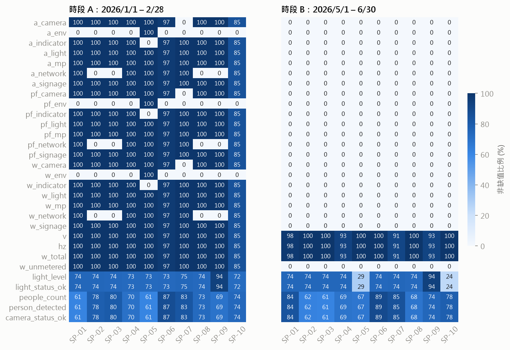
w_total、v、hz 與路燈、人流。時段 A 的 0% 格代表該杆沒有這個迴路，屬於結構性缺失，不應該補值。SP-10 在 2 月上旬有約一週電表斷訊；時段 B 的 SP-05、SP-10 路燈資料只有約四分之一時段有值。以下三件事如果不處理，後面所有分佈比較都會失真。前兩件已經在 build_pole_timeseries.py 裡修正。
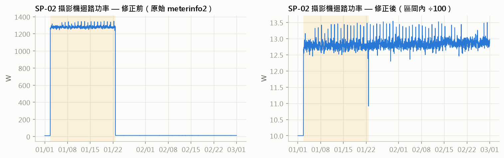
w 與 a 都剛好放大 100 倍，電流甚至飽和在 99.99A。依每杆實際的切換時間偵測後除以 100。累積電量 whplus 在這段期間也跟著放大，並在故障結束時往下跳，之後如果要用電量差分當特徵，需要另外處理。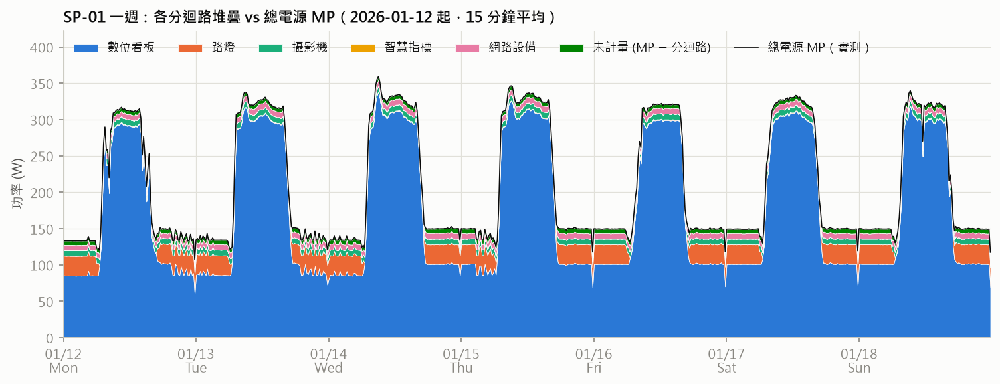
w_total 改用 MP；時段 B 每個時間點的多筆資料中，最大的一筆就是 MP。w_unmetered 各杆中位數為 3–13W，SP-09 偏高達 37W。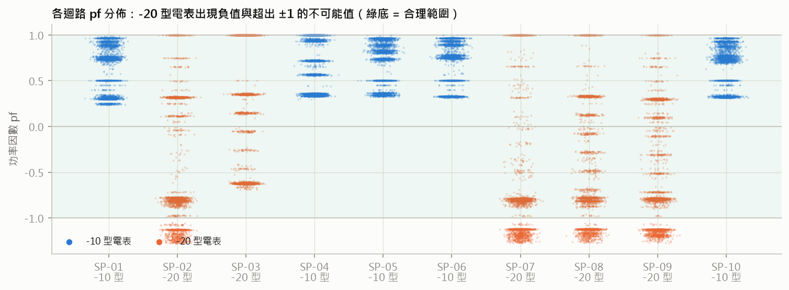
每個特徵都有很強的日週期，而且不同設備的節奏不一樣。看板與 MP 跟著營業時間走，路燈跟著排程走，攝影機與網路設備幾乎是常數。
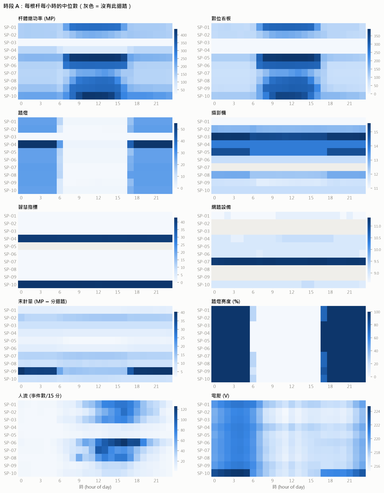
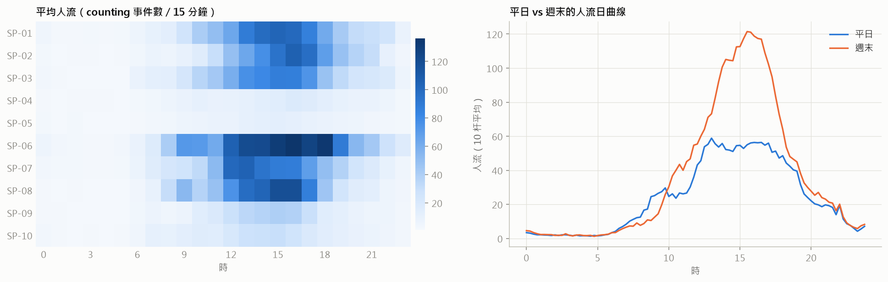
時段 A、B 相隔三個月。同一根杆在兩段之間有沒有位移？
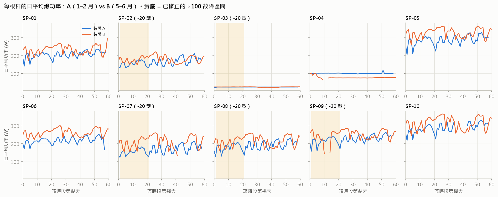
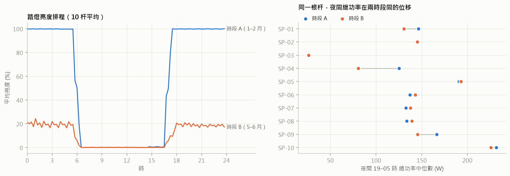
對建模的影響：時段 A 學到的「夜間正常用電」直接套到時段 B 會全部偏離。基準必須把路燈亮度當成輸入條件，或依排程分層建立；不能拿 A 訓練、B 推論而不做調整。
回到核心問題：A 杆與 B 杆的用電是否來自同一個分佈？
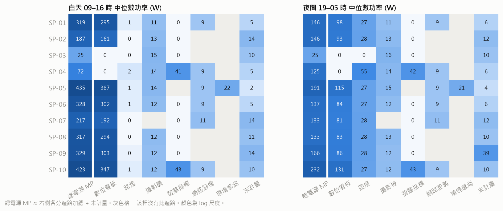
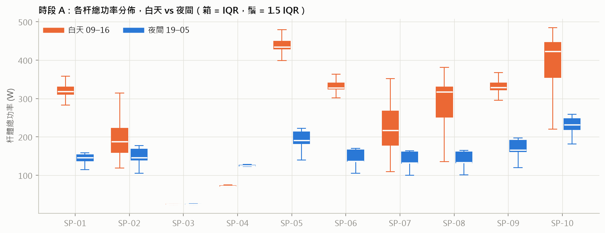
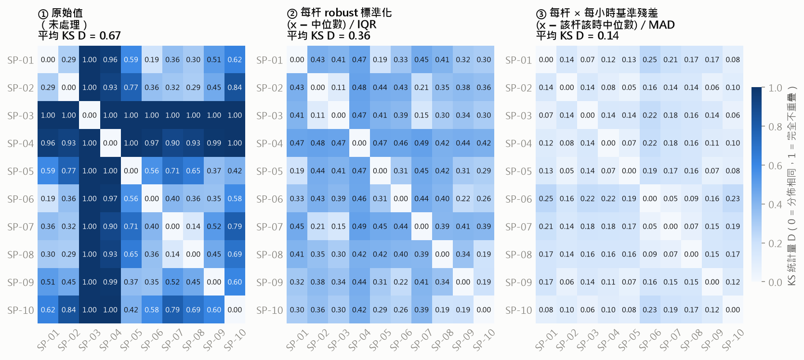
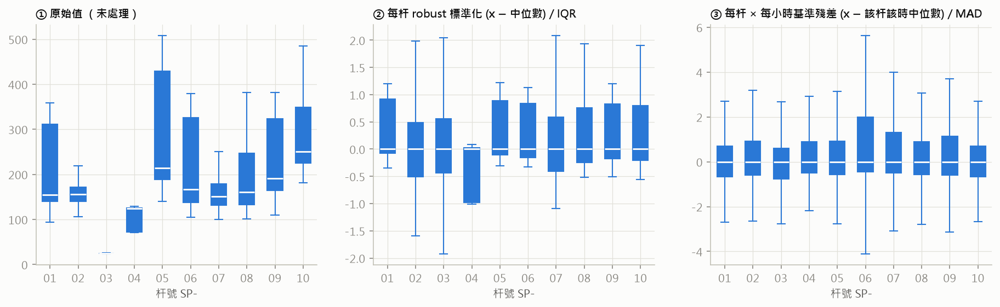
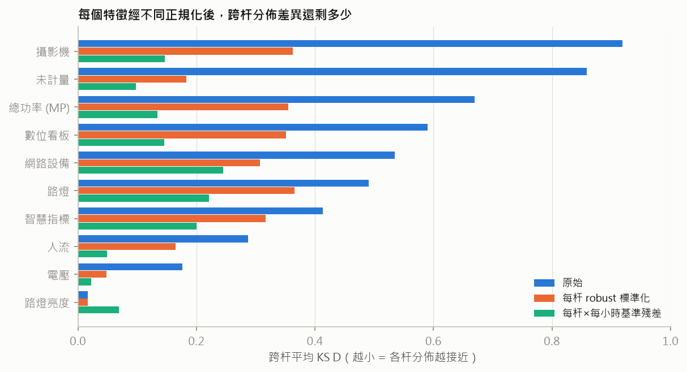
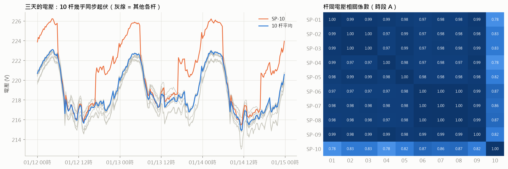
跨系統的一致性（燈控說的 vs 電表量到的）本身就是一個很強的異常特徵。
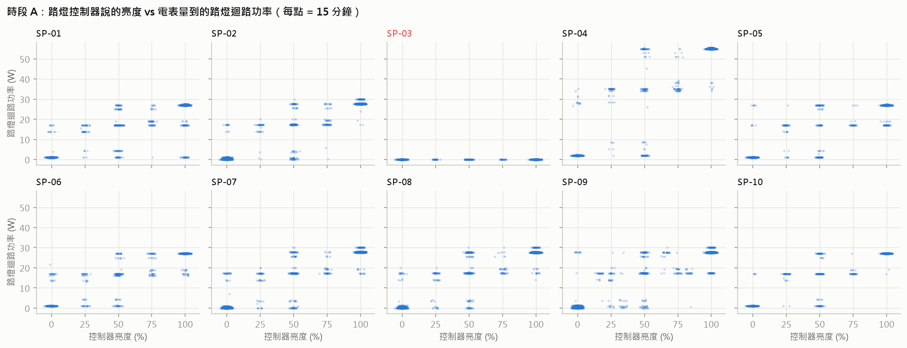
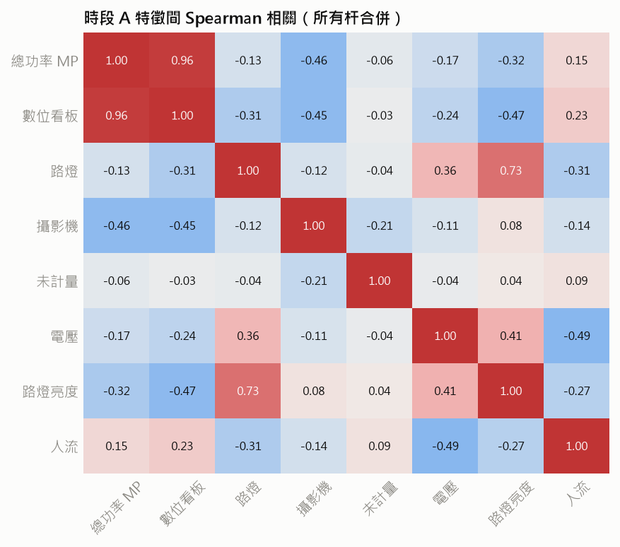
目前看到的異常線索
依特徵性質分成四類，每類的處理方式不同。
| 特徵性質 | 代表特徵 | 跨杆分佈 | 建議處理 |
|---|---|---|---|
| 設備配置決定的用電 | w_total、w_signage、w_light、w_camera、w_unmetered | 水準與日週期形狀都不同（KS 0.4–0.9） | 每杆 × 每小時 × 平日/週末建立基準（中位數），模型輸入為 (x − 基準) / MAD。可以用一個全域模型，各杆共用殘差分佈。 |
| 共同控制變數 | light_level | 本來就一致（KS 0.02） | 不正規化，直接當條件輸入。基準依亮度分層，因為 A、B 的排程不同。 |
| 共用環境訊號 | v | 水準略有差異，起伏高度同步 | 轉成與 10 杆平均的偏差；10 杆平均本身可以當全域特徵。 |
| 外生負載 | people_count | 水準差很多（SP-06 最多、SP-05 最少） | 每杆標準化；只用在優先度加權，不進入異常偵測本身。 |
| 結構性缺失 | w_indicator、w_network | 部分杆根本沒有這個迴路 | 不補值。改加 0/1 存在遮罩，或只用所有杆都有的迴路。 |
| 常數或無效欄位 | hz、pf_*、a_*、各狀態欄位 | — | 移除。 |
要先決定的一件事：用哪個時段訓練？時段 B 只有杆體總量。如果模型要同時用 A、B，輸入只能是杆體層級的特徵（w_total、v、light_level、people_count），迴路明細只能在 A 期拿來做下鑽與驗證。如果只用 A，可以用迴路明細，但訓練資料只有 59 天，且路燈排程與 B 不同。
建議接著做的衍生特徵：亮度 vs 路燈功率的殘差（燈控與電表的一致性）、w_unmetered、電壓偏差、累積電量 whplus 的 15 分鐘差分（需先處理故障區間的跳動）。